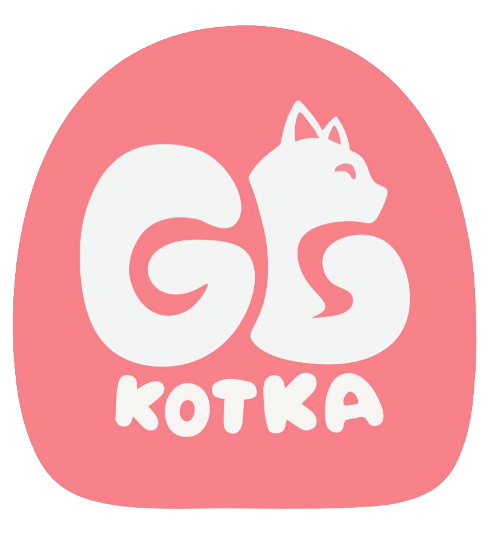

GoodGames Kotka
--- Game student association ---
What is GGK?
GGK or GoodGames Kotka is a student association that I was part of planning with the help of my fellow students. The student association goals are to create more attention to the game students in Kotka by gaining the support of companies in Finland. This way students in Kotka could have ways of attending events on a less local scale, have better networking skills and find practical training programs so they can achieve their goals.
What was my role?
I was one of the main people for the organisation along side Jessica Koivunen and Kaspian Sellgren. I took it upon myself to plan the rules for the organisation and to have meetings with people that can be of help with creating the organisation. I got in contact with students from Cyberclub (student association for cybersecurity students) and talked to teachers about support fees and rules that can be of use for the future.
What went wrong
I had simply taken too much work on myself. Prior to GGK, I was a lead organiser for Games Co-op, an event by students for students. There was an issue with the new lead organiser not being all that good at his job, which resulted in me and fellow founders of the event to leave. As a pushback, I decided to take it upon myself to start work on the student organisation. I reached out to people that would be interested and got them on board. I worked on the association however, it became too much and after the spring vacation, I had to cut something out. I initially said that the groundwork was done well and the fellow organisers could use the material to establish the organisation later when they might have had more people working on it. That was my last action. As of writing, the student organisation has been established but we will see what the future holds.